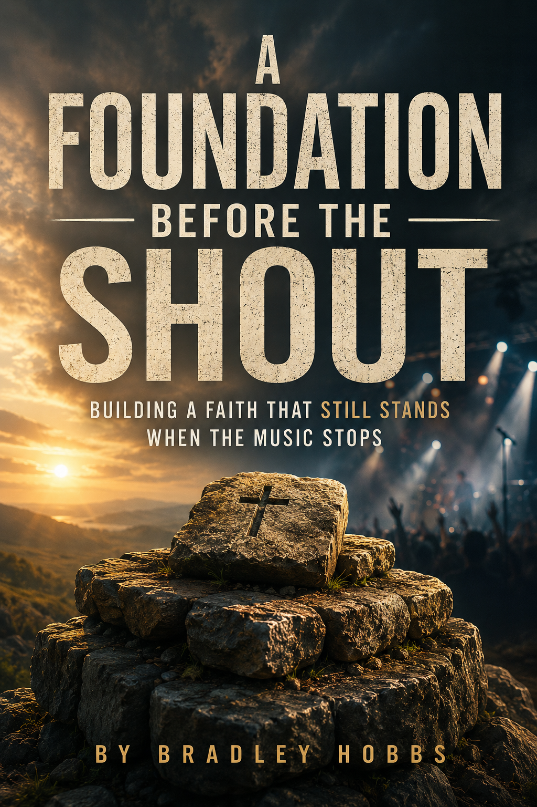

Every life is built upon something.
Joy and sorrow, worship and waiting, certainty and questions all reveal what lies beneath the surface. These pages invite you to slow down, reflect on Scripture, and discover a faith that remains steadfast when emotions fade and circumstances change.
Read at your own pace. Pause when you need to. Pray often. May every page lead you closer to Jesus Christ, the only sure foundation.

Read this devotional freely online.
Paperback and Kindle editions will be available on Amazon soon.
If these pages encourage your walk with Jesus and you would like to support future devotional writing and ministry resources, you are welcome to give through Cash App or PayPal.
Thank you for helping make resources like this available to everyone.